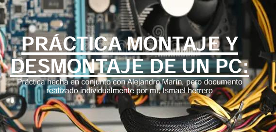
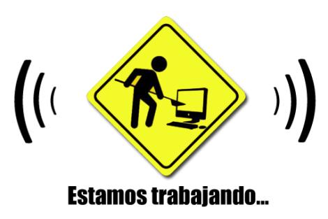

Sobre mí

Hola, soy un estudiante de GS ASIR en España apasionado por la informática y las redes. Busco crecer profesionalmente y aprender todo lo posible durante mi formación.
Habilidades
- Diseño de Servidores
- Montaje de PC
- Desmontaje de Servidor
- Esta Página
- Libre :D
Proyectos
Proyecto 1: Diseño de Servidor
¡Enlace a la Práctica!Desde cero investigué, busqué y diseñé un servidor, selleccionado cada componente individualmente y compatibilizándolos.
Proyecto 2: Montaje de PC
 ¡Enlace a la Práctica!Monté y desmonté un PCs de sobremesa con eficiencia y profesionalidad
Proyecto 3: Montaje de Servidor
¡Enlace a la Práctica!Monté y desmonté servidores con eficiencia y rapidez
Proyecto 4: Esta Página
¡Ya estás en esta práctica!
Diseñé y creé este porfolio para mi pronta salida al mercado laboral
Proyecto 5: Conexión Mediante Terminales
¡Enlace a la Práctica!Aquí aprendí a controlar de forma remota equipos Windows, Linux y Android
Contacto
Email: ismaelherrero513@correo.com
Teléfono: no disponible
LinkedIn: linkedin.com/in/estudiante